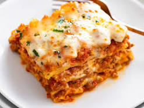

Lazagna

Lazagna
Lasagna is a type of pasta, possibly one of the oldest types, made of very wide, flat sheets. Either term can also refer to an Italian dish made of stacked layers of lasagna alternating with fillings such as ragù, béchamel sauce, vegetables, cheeses, and seasonings and spices.
Ingredients
- Lasagna noodles
- Ground beef or Italian sausage
- Tomato sauce or canned diced tomatoes
- Ricotta cheese
- Mozzarella cheese
- Parmesan cheese
- Garlic
- Onion
- Oregano
- Basil
- Salt and pepper
Steps
- Cook the pasta according to the package instructions until it is al dente.
- Preheat the oven to 375°F (190°C).
- In a large skillet, cook the ground beef over medium heat until browned, breaking it up as it cooks.
- Add the tomato sauce, tomato paste, and seasonings to the skillet and cook for a few minutes.
- Spread a layer of the cooked pasta.